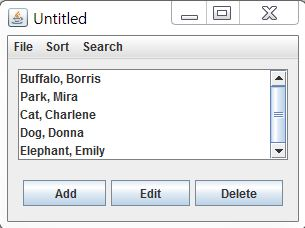

SENG2130 Software Development - Week 8, Lab 5
UML Diagram: Address Book - Analysis
The objectives of this exercise are to build a complete system with creating UML.
Create UML diagram based on scenario.
Learning objectives
This lab attempts to give a complete example of object-oriented analysis, design, and programming applied to a small size problem: a simple address book. The students would benefit from seeing a complete example of OO methodology applied to a single problem.
Case Study: Address Book system
Based on the following scenario,- Create a Use Case diagram
- Create a Class diagram
- Create a Sequence diagram for each Use Case
Requirements Statement
The software to be designed is a program that can be used to maintain an address book. An address book holds a collection of entries, each recording a person's first and last names, address, city, state, zip, and phone number.
It must be possible to add a new person to an address book, to edit existing information about a person (except the person's name), and to delete a person. It must be possible to sort the entries in the address book alphabetically by last name (with ties broken by first name if necessary), or by ZIP code (with ties broken by name if necessary). It must be possible to print out all the entries in the address book in "mailing label" format.
It must be possible to create a new address book, to open a disk file containing an existing address book to close an address book, and to save an address book to a disk file, using standard New, Open, Close, Save and Save As ... File menu options. The program's File menu will also have a Quit option to allow closing all open address books and terminating the program.
The initial requirements call for the program to only be able to work with a single address book at a time; therefore, if the user chooses the New or Open menu option, any current address book will be closed before creating/opening a new one. A later extension might allow for multiple address books to be open, each with its own window which can be closed separately, with closing the last open window resulting in terminating the program. In this case, New and Open will result in creating a new window, without affecting the current window.
The program will keep track of whether any changes have been made to an address book since it was last saved, and will offer the user the opportunity to save changes when an address book is closed either explicitly or as a result of choosing to create/open another or to quit the program.
The program will keep track of the file that the current address book was read from or most recently saved to, will display the file's name as the title of the main window, and will use that file when executing the Save option. When a New address book is initially created, its window will be titled "Untitled", and a Save operation will be converted to Save As ... - i.e. the user will be required to specify a file.
User Interface
Because this is to be a "standard GUI" style application, some attention needs to be given to the user interface at this point. A user interface like the following might be adopted. Not shown in the screen shot is a File menu with New, Open, Close, Save, Save As ..., Print, and Quit options. For the "Edit" and "Delete" buttons, the user must first select a person in the scrolling list of names, and then can click the appropriate button to edit/delete that person.

Analysis
An initial reading of the requirements suggests that the following will be part of the system.
- A single entity object representing the current address book that the program
is working with (
AddressBook). - An arbitrary number of entity objects, each representing one of the people that
is in the current address book (
Person). - A boundary object representing the interface between the address book system
and the human user (
AddressBookGUI). - A boundary object representing the interface between the address book system
and the file system on disk (
FileSystem). - A controller object that carries out the use cases in response to user
gestures on the GUI (
AddressBookController). (For a problem of this small size, a single controller is sufficient.)
The various use cases work with these objects, as follows:
- The Add a Person Use Case involves getting the new information from the user, and then telling the AddressBook object to add a new person with this information to its collection
- The Edit a Person Use Case involves displaying the current information about the desired person (obtained from the AddressBook), then allowing the user to enter new information for the various fields, then telling the AddressBook object to make the changes.
- The Delete a Person Use Case involves asking the user to confirm deletion, and then telling the AddressBook object to remove this person from its collection.
- The Sort Entries by Name Use Case involves telling the AddressBook object to rearrange its collection in order of name.
- The Sort Entries by ZIP Use Case involves telling the AddressBook object to rearrange its collection in order of ZIP.
- The Create New Address Book Use Case involves creating a new AddressBook object.
- The Open Existing Address Book Use Case involves getting a file specification from the user, and then telling the FileSystem object to read in an AddressBook object from this file.
- The Save Address Book Use Case involves determining whether or not the current AddressBook object has a file it was last read from / saved to; if so, telling the FileSystem object to save the current AddressBook object to this file. (If not, the Save Address Book As ... Use Case is done instead.)
- The Save Address Book As ... Use Case involves getting a file specification from the user, and then telling the FileSystem object to save the current AddressBook object to this file.
- The Print Address Book Use Case involves telling the AddressBook object to print out its collection in order.
- (The Quit Program Use Case does not involve any of the other objects)
- (The Offer to Save Changes Extension may involve performing the Save Address Book Use Case.)
please emal Mira Park if you find any errors on this page.